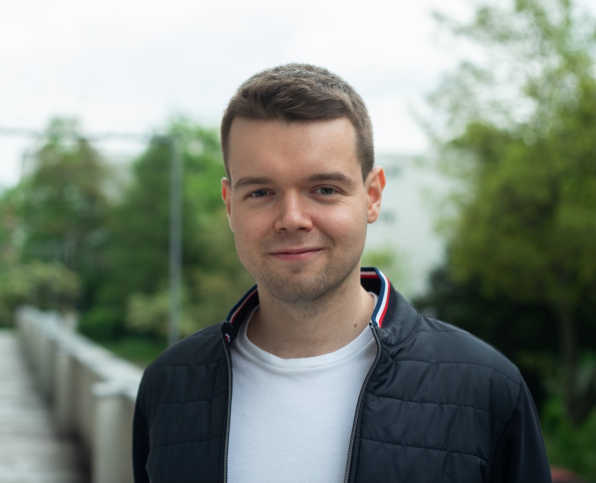

Piotr Matyja

Film Director, Producer & Startup Founder
I'm learning to code to understand how the internet actually works so I can be more efficient working at my startup.
Education
- Master of Arts, Film Directing - American Film Institute (2021-2023)
- Bachelor Degree, Creative Writing - University of Wrocław (2015-2019)
Work Experience
- Film Director
Directed over 10 short films and 3 interactive films, including:
- The Calling
- Nowhere to Run
- Everything is Fine
- Assistant Director
Worked with multiple production companies as a 1st and 2nd 2nd Assistant Director, including:
- Opus Film
- Aurum Film
- Re Studio
Producer
Skills
- Communication ☆☆☆☆
- Problem Solving ☆☆☆☆☆
- Creativity☆☆☆☆☆
Other